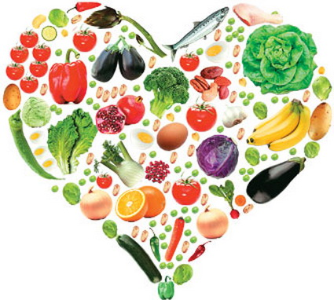

Pravilnom ishranom do dužeg i kvalitetnijeg života

Jedno od najintigrantnijih pitanja koje muče čovečanstvo je kako zaustaviti proces starenja, odnosno kako produžiti životni vek; osećati se bolje i izgledati bolje. Koliko je u svemu tome, značaj genetskog nasledja i da li čovek može, načinom života u koji spada i ishrana, sam da bitnije utiče na sopstveni život?
U savremenom životnom okruženju postoji mnogo faktora koji mogu da utiču na ispoljavanje naših gena, jer zbir onoga što jedemo, pijemo, udišemo, mislimo i vežbamo - može da nadjača naš genetski materijal.
Dugogodišnja naučna istraživanja su pokazala da hrana nije samo izvor kalorija, hrana nije ni samo lek. Hrana je efikasno oružje u borbi protiv starenja jer ima veliki uticaj na hormone, a ključ borbe protiv starenja je komunikacija izmedju hormona. Iz tih razloga ishrana sa ograničenim unosom kalorija predstavlja temelj programa protiv starenja.
Sledeći korak koji će doprineti borbi protiv starenja je umereno, ali dosledno vežbanje. Samo stalna fizicka i mentalna aktivnost obezbedjuje dug i kvalitetan život. Neaktivnost podrazumeva slabo srce, lomljive kosti, gojaznost, depresiju i prerano starenje.
Konačno, na vrhu piramide protiv starenja je smanjenje stresa, zbog njegovog korisnog delovanja na dugovečnost mozga. Moramo da naučimo da amortizujemo probleme jer će ih uvek biti i ne možemo ih eliminisati. Najbolji lek protiv stresa je svež vazduh i šetnja. Ali ne treba zaboraviti prijatelje i druženja kao ni činjenicu da niko nije dovoljno star da bi prestao sa seksom.
Vratimo se sad ishrani, kao najvažnijem faktoru za očuvanje dugovečnosti. Prvo i najvažnije je umerena, niskokalorična i raznovrsna ishrana. Idealna je mediteranska ishrana sa dosta povrća i voća, ribe i maslinovim uljem. Potrebno je piti 6-8 časa vode dnevno, izbegavati so i koristiti dosta začinskog bilja.
Najvažnije namirnice za dugovečnost su:
- maslinovo ulje sa nezasićenim masnim kiselinama, obezbedjuje esencijalne masne kiseline potrebne za produkciju hormona, štiti srce i krvne sudove i deluje kao antioksidant
- koštunjavo voće (orasi lešnici, bademi, 9 diyu nivo HDL(dobre masti,obezbedjuju dijetna vlakna i vitamin E, smanjuju rizik od kardiovaskularnih bolesti)
- plava riba – riblje ulje, omg a3 masne kiseline i vitamin D
- nemasni jogurt - kalcijum i vitamin D
- integralne žitarice – dijetna vlakna
- mahunarke (pasulj, sočivo, soja, ...) biljni proteini, dijetna vlakna, folati
- povrće: posebno karfiol, kupus, brokoli, spanać, paradajiz zbog obilja biljnih hormona, pigmenata, dijetnih vlakana, vitamina i minerala i antioksidanata
- voće: jabuke, kruške, limun, pomorandže i šumsko voće zbog velikog sadržaja C vitamina, dijetnih vlakana i antioksidanata
- crna čokolada u malim kolicinama, popravlja raspoloženje sadrži antioksidante i jača imunitet
Većina ljudi nasledi šansu da doživi 85 godina. Ostalo zavisi od nas i naših navika.
Budimo umereni u jelu, vodimo aktivan život, vežbajmo telo i misao, negujmo prijateljstvo i druženje.